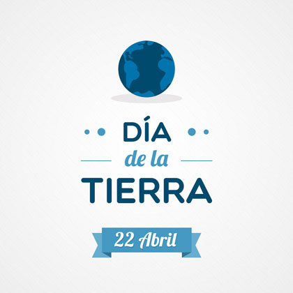

El Día de la Tierra es un día celebrado en muchos países el 22 de abril.
El 20 de diciembre de 2013, la Asamblea General de la ONU, en su 68º periodo de sesiones, decidió proclamar el 3 de marzo como el Día Mundial de la Naturaleza, con el objetivo de concientizar acerca del valor de la fauna y la flora salvajes. La fecha elegida marca el aniversario de la aprobación en 1973 de la Convención sobre el Comercio Internacional de Especies Amenazadas de Fauna y Flora Silvestres (CITES, en sus siglas en inglés), la cual juega un destacado papel en la protección de la especies frente al comercio internacional. Previamente, el 3 de marzo había sido designado como Día Mundial de la Naturaleza en una resolución de la Conferencia de las Partes en la CITES, en su 16.ª reunión celebrada en Bangkok del 3 al 14 de marzo de 2013. La resolución, copatrocinada por el Reino Unido y Tailandia, informaba de las conclusiones de la reunión a la Asamblea General de la ONU.

El 15 de diciembre de 1972, la Asamblea General de la ONU, en la resolución número 2994 conseguida en el 27° periodo de sesiones, designó el 5 de junio Día Mundial del Medio Ambiente, para conmemorar la inauguración de la Conferencia de Estocolmo sobre el Medio Humano, concientizando a la opinión pública de la necesidad de mejorar y preservar el medio ambiente.
El Día Mundial del Medio Ambiente se conmemora todos los años en más de 100 países. Es motivo de inspiración para actividades políticas y comunitarias conducidas a renovar su compromiso con la protección del medio ambiente. Las actividades tienen como finalidad sensibilizar las situaciones ambientales, propiciando que los individuos sean elementos activos de un desarrollo sostenible, sustentable y equitativo con la finalidad de que la humanidad asegure un futuro más próspero, valiéndose para ello de actividades muy diversas que van desde desfiles callejeros, paseos en bicicleta, conciertos ecológicos, plantación de árboles, campañas de reciclado y limpieza, pasando por seminarios, mesas redondas, llegando hasta la firma o ratificación de convenios internacionales. Los detalles sobre las actividades previstas para conmemorar este día se publican, y se notifica qué es lo que hicieron en todo el mundo para celebrarlo.
Los más importantes actos de conmemoración del Día Mundial del Medio Ambiente tienen verificativo en la ciudad de Shenzhen, perteneciente a la República Popular China.